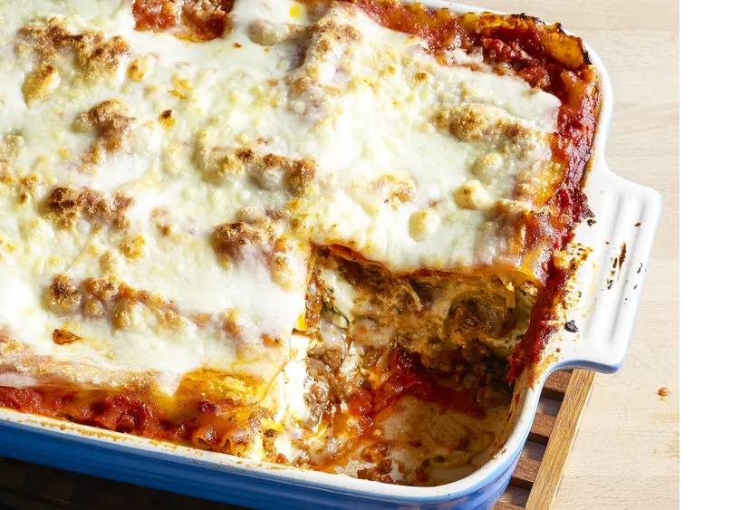

World's Best Lasagna
This lasagna recipe takes a little work, but it is so satisfying and filling that it's
worth it!
Prep time: 30m
Cook Time: 2 hrs 30m
Servings: 12
Ingredients
- 1 pound sweet Italian sausage
- ¾ pound lean ground beef
- ½ cup minced onion
- 2 cloves garlic, crushed
- 1 (28 ounce) can crushed tomatoes
- 2 (6.5 ounce) cans canned tomato sauce
- 2 (6 ounce) cans tomato paste
- ½ cup water
- 2 tablespoons white sugar
- 4 tablespoons chopped fresh parsley, divided
- 1 ½ teaspoons dried basil leaves
- 1 ½ teaspoons salt, divided, or to taste
- 1 teaspoon Italian seasoning
- ½ teaspoon fennel seeds
- ¼ teaspoon ground black pepper
- 12 lasagna noodles
- 16 ounces ricotta cheese
- 1 egg
- ¾ pound mozzarella cheese, sliced
- ¾ cup grated Parmesan cheese
Steps
- Gather all your ingredients.
- Cook sausage, ground beef, onion, and garlic in a Dutch oven over medium heat
until well browned.
- Stir in crushed tomatoes, tomato sauce, tomato paste, and water. Season
withs ugar, 2 tablespoons parsley, basil, 1 teaspoon salt, Italian
seasoning, fennel seeds, and pepper. Simmer, covered, for about 1 1/2 hours,
stirring occasionally.
- Bring a large pot of lightly salted water to a boil. Cook lasagna noodles in boiling
water for 8 to 10 minutes. Drain noodles, and rinse with cold water.
- In a mixing bowl, combine ricotta cheese with egg, remaining 2 tablespoons
parsley, and 1/2 teaspoon salt.
- Preheat the oven to 375 degrees F (190 degrees C).
- To assemble, spread 1 1/2 cups of meat sauce in the bottom of a 9x13-inch baking
dish. Arrange 6 noodles lengthwise over meat sauce. Spread with 1/2 of the ricotta
cheese mixture. Top with 1/3 of the mozzarella cheese slices. Spoon 1 1/2 cups
meat sauce over mozzarella, and sprinkle with 1/4 cup Parmesan cheese.
- Repeat layers, and top with remaining mozzarella and Parmesan cheese.Cover
with foil: to prevent sticking, either spray foil with cooking spray or make sure the
foil does not touch the cheese.
- Bake in the preheated oven for 25 minutes. Remove the foil and bake for an
additional 25 minutes.
- Rest lasagna for 15 minutes before serving.